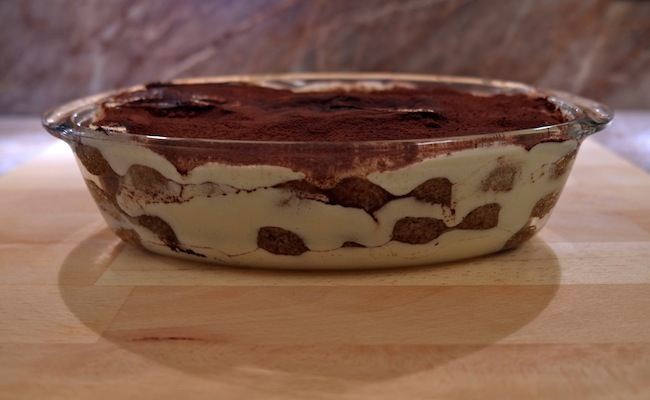

Tiramisu Recipe

About
The classic Italian dessert! A creamy concoction, melts in your mouth.
Ingredients
- 1 Package Savoiardi Ladyfingers
- 250 Grams Mascarpone Cheese
- Cocoa Powder
- 3 egg
- 100 Grams Sugar
- Coffee (Espresso)
Steps
- Make 2 (6 cup) pots of espresso. This is best made with a Bialetti Stovetop Espresso Maker and Kimbo Napoletano Ground Espresso.
- Pour the espresso into a shallow bowl or baking dish and set aside to cool.
- Separate the egg yolks and whites into two bowls.
- Add half of the sugar to the yolks and beat until thick.
- Add the mascarpone and beat until smooth and creamy (add Marsala Wine to taste).
- Beat the egg whites with the other half of the sugar until stiff and glossy, like you would for a meringue.
- Fold the egg whites into the egg yolk mixture a little at a time, blending through with a spatula.
- Dip cookies one at a time in the coffee and layer into a rectangular baking dish.
- Spread a generous layer of the mascarpone mixture on top.
- Sprinkle with cocoa powder
- Repeat layers.
- Cover and refrigerate several hours or overnight before serving.